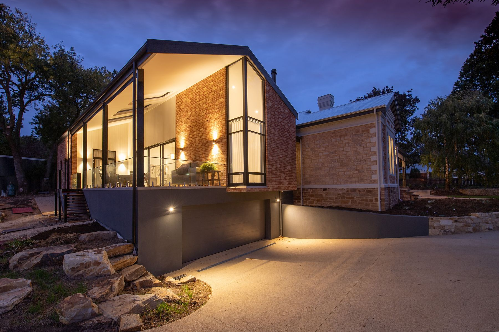
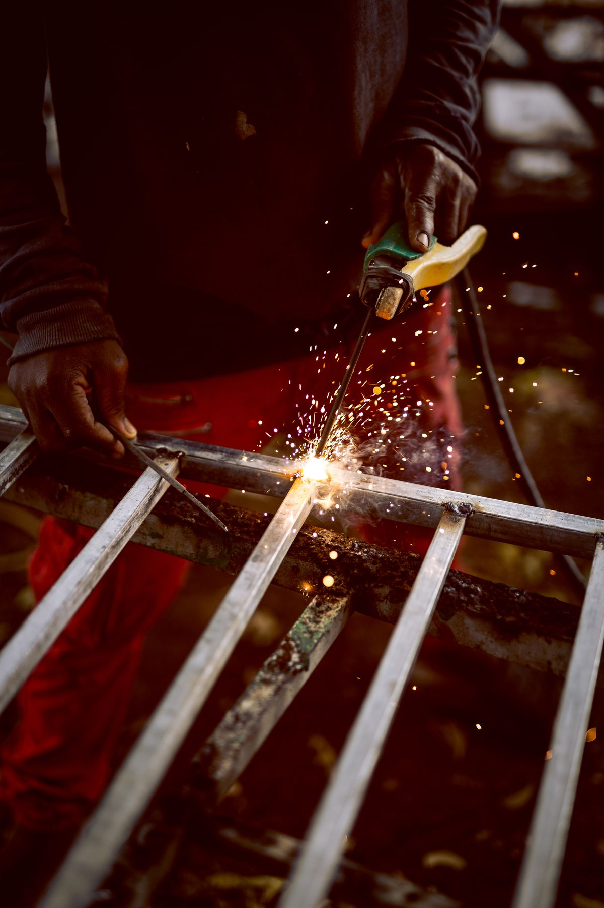

About us
A small Pretoria company with over 20 years of gates, alarms and steelwork behind it.
Who we are
We are small on purpose. It means you always know who is coming to your property, and who to call afterwards.
Gate and Alarms Security has been installing and maintaining security systems for more than 20 years. We started with gates and gate motors and grew, job by job, into alarm systems, CCTV, electric fencing and steelwork for homes, businesses and industrial properties around Pretoria.
The company is run by Brian, who is the first person you speak to and the one who plans your job. He then sends out our installation team, who know his standards and have worked with him for years. There is no call centre in between.
We are based near Waverley and the Moot, and most of our clients are in the surrounding suburbs. We are flexible though, and regularly travel further for clients who want us. We do not see clients at our office: every quote, installation and repair happens at your property.
Our clients tend to stay with us. Many have used us for one gate motor, then come back years later for an alarm, cameras or a fence, and recommended us to their neighbours along the way.
How we work
What you can expect from us
These are the things clients mention most when they recommend us.
Personal contact
You deal with the owner from the first call to the final test. Brian knows your site, your system and your history with us.
Honest advice
We recommend what your property actually needs. Sometimes that is a new system, and often it is a repair or a single extra sensor.
After sales service
After sales service has always been our focus. We stay available after the installation for faults, services and upgrades.
After sales and maintenance
A system is only as good as its upkeep.
Gate motors wear, batteries age and sensors get dusty. Most security failures are small problems that nobody noticed. That is why we offer after sales service and maintenance contracts to all our clients.
- Scheduled services for gates, motors and fences
- Battery testing and replacement before they fail
- Alarm and camera health checks
- Priority call outs for contract clients

Who we work for
Homes, businesses and industry
The same team and the same standard, whatever the size of the site.
Homes and complexes
Gates and motors, alarms linked to your armed response, cameras on your phone, and security doors for the family home.
Offices and shops
Access control for staff, cameras over entrances and parking, and alarm systems that protect stock after hours.
Yards and premises
Heavy duty gates, palisade and electric fencing, and maintenance contracts that keep large sites secure.

Work with us
Twenty years in, we still answer our own phone.
Call or WhatsApp Brian to talk through your gate, alarm or camera needs.
081 718 2920